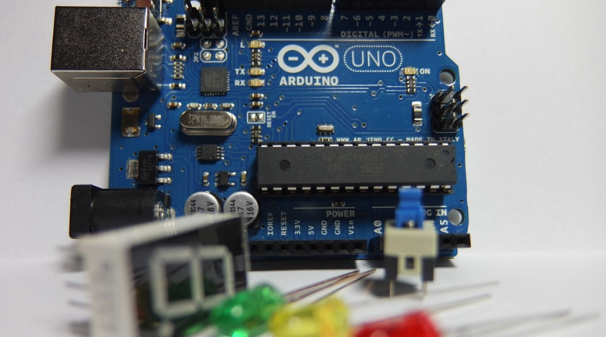
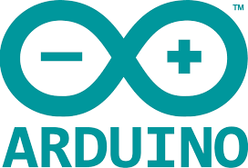
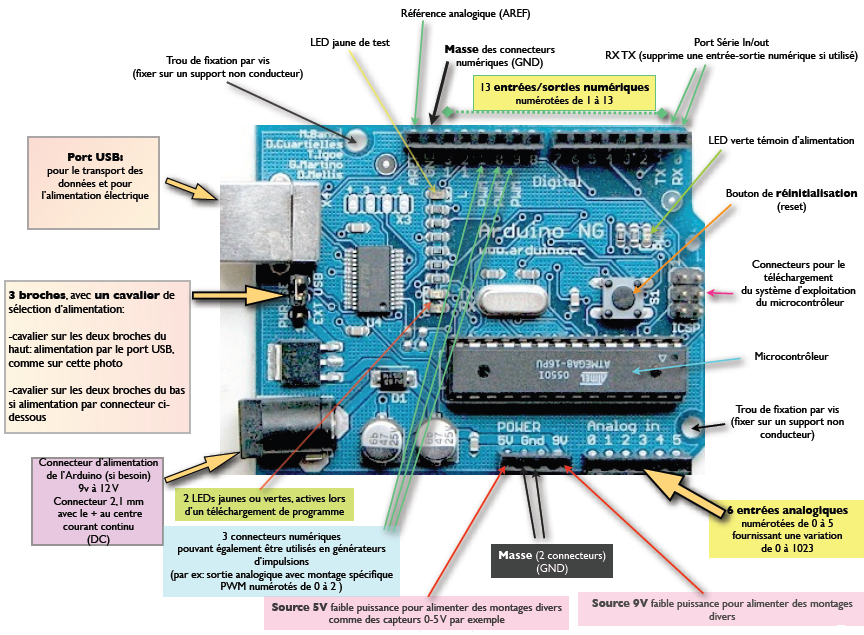
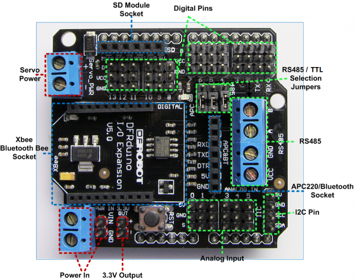
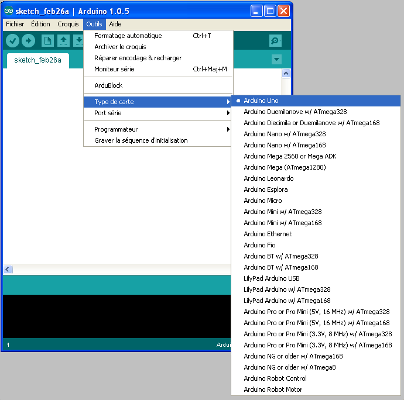
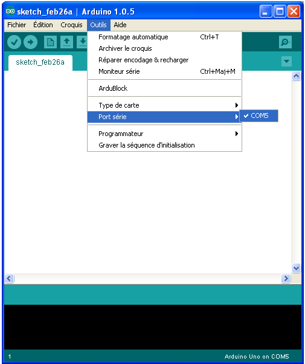

|
|
|
ARDUINO |
La description de la carte Arduino

|
 |
L’Arduino est une carte électronique en Matériel Libre. Elle peut servir: 1- pour des dispositifs interactifs autonomes simples 2- comme interface entre capteurs/actionneurs et ordinateur 3- comme programmateur de certains micro-contrôleurs. Elle se présente sous cette forme : |

Cette carte est basée sur un microcontrôleur (mini-ordinateur) Atmel ATMEGA8 ou ATMEGA168. Elle dispose dans sa version de base de 1 Ko de mémoire vive, et 8Ko de mémoire flash pour stocker ses programmes. Elle peut être connectée à 13 entrées ou sorties numériques, dont 3 PWM (pouvant donner 3 sorties analogiques : cf http://fr.wikipedia.org/wiki/PWM) et 6 entrées analogiques convertissant en 10 bits.
Dans la version la plus courante, la communication avec l’ordinateur se fait par un port USB. Il existe plusieurs versions de l’Arduino, dont une version miniaturisée, et d’autres projets sont également en gestation. La carte dispose d’un logiciel système interne (modifiable) et des programmes utilisateur
La carte "Shield"
On peut lui associer d'autres cartes, celles-ci permettent un câblage assez rapide de certains composants.

L'interface de programmation et sa configuration.
Le logiciel permettant la programmation se présente sous cette forme . En premier lieu vous devez connecter la carte à l'ordinateur par un câble USB .... pour le reste nous allons y venir bientôt.
|
 Lancer le programme Arduino (environnement de travail : IDE). Dans le menu Outils -> Type de carte, choisir Arduino UNO dans notre cas. |
 Dans le menu Outils -> Port série, choisir COM5 ou un autre cela peut dépendre de l'ordinateur. |
Créé avec HelpNDoc Personal Edition: Créer des livres électroniques facilement